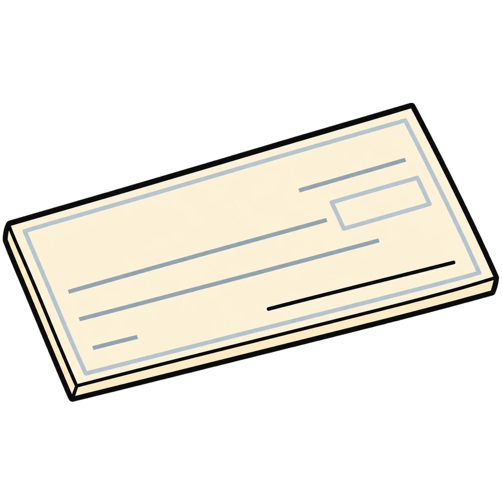
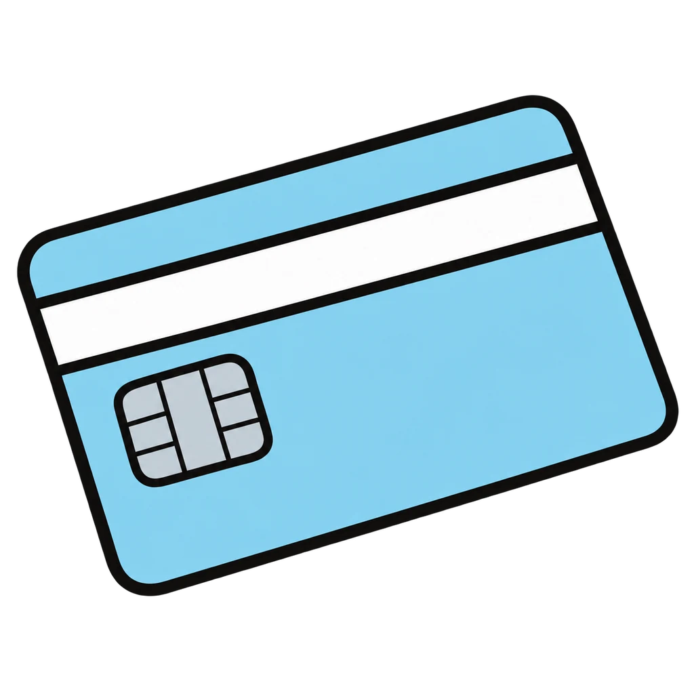
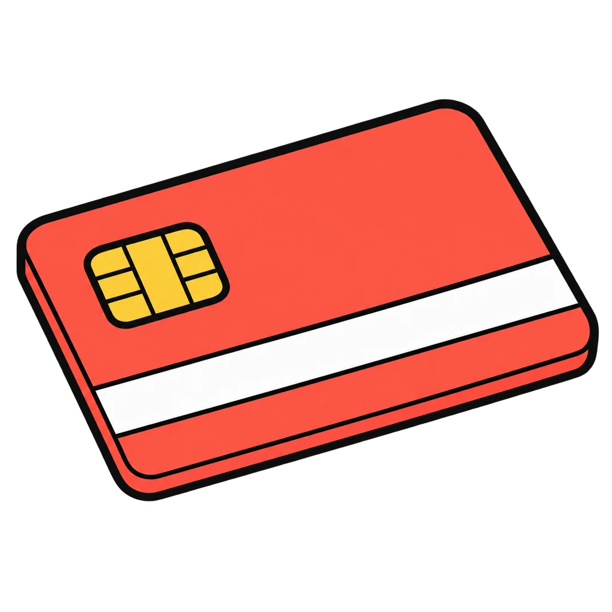
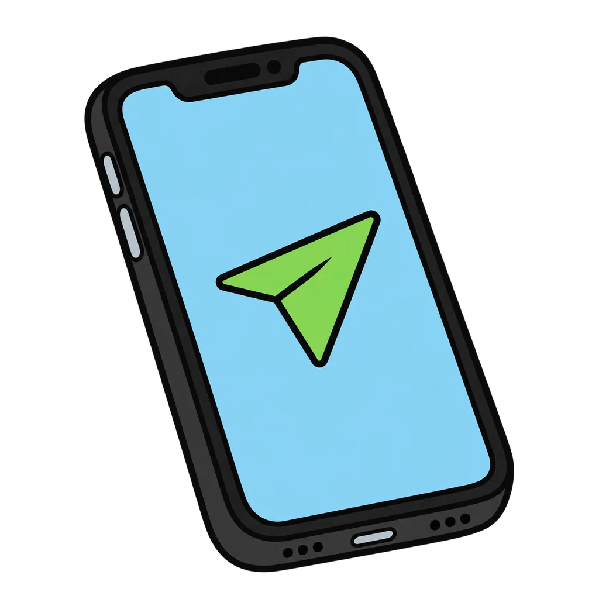

Reviews Lesson 2.10, Lesson 2.11. Reviews Lesson 2.10 (the seven ways to pay from Part A of the handout and its teacher key; Round 1 is that table cut into clues) and the first step of Lesson 2.11 (the debit versus credit chart; Round 2 is Part A of Handout 02.11). Use it as the do now of Lesson 2.11, which the lesson already opens with the debit versus credit slide, or as review the day before the Money Basics Quiz, which covers ways to pay in items 9 and 10. Settings: seven buttons in Round 1, so give grade 6 a five-button version (drop prepaid and bank transfer); the check-writing and register skills are not in the game, so the game does not replace Part B and Part C of the handout.
Ways to Pay
A clue appears: where the money comes from, the record it leaves, a risk, or a fee. Tap the way to pay from seven pictures. Then a line from the chart appears, and you tap Debit card or Credit card.
How to play




Done
The ones to study:
Worth knowing by heart:
- Handout 02.10 Part A: the seven ways to pay, where the money comes from, the record, one risk, one fee
- Handout 02.11 Part A: debit vs credit, side by side
- Credit is borrowing money with a promise to pay it back. Debt is money you owe. Interest is the price of borrowing.